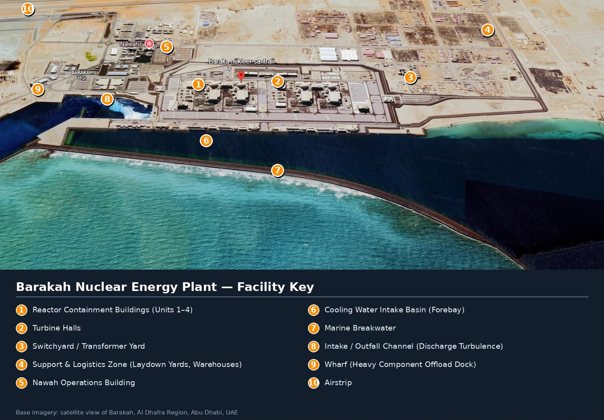
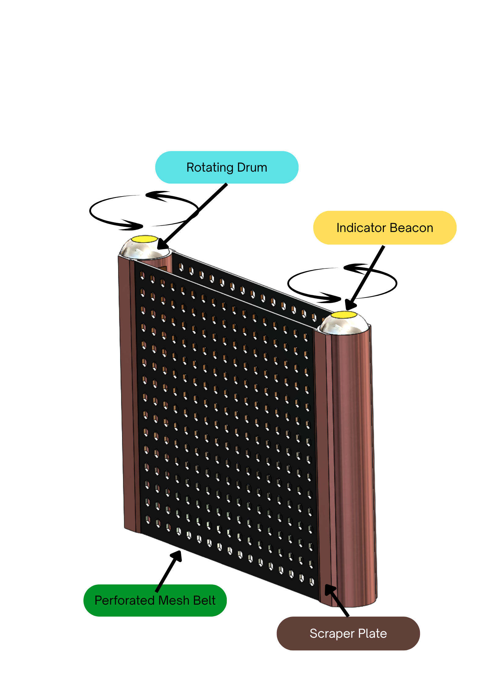
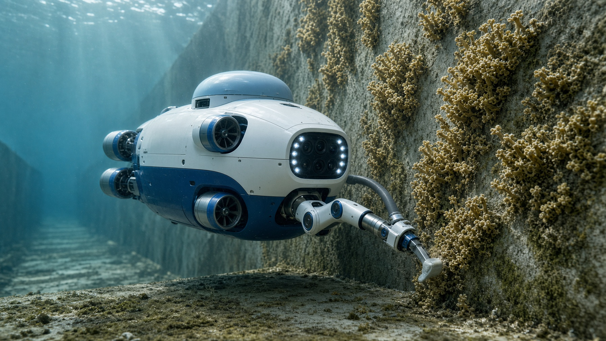
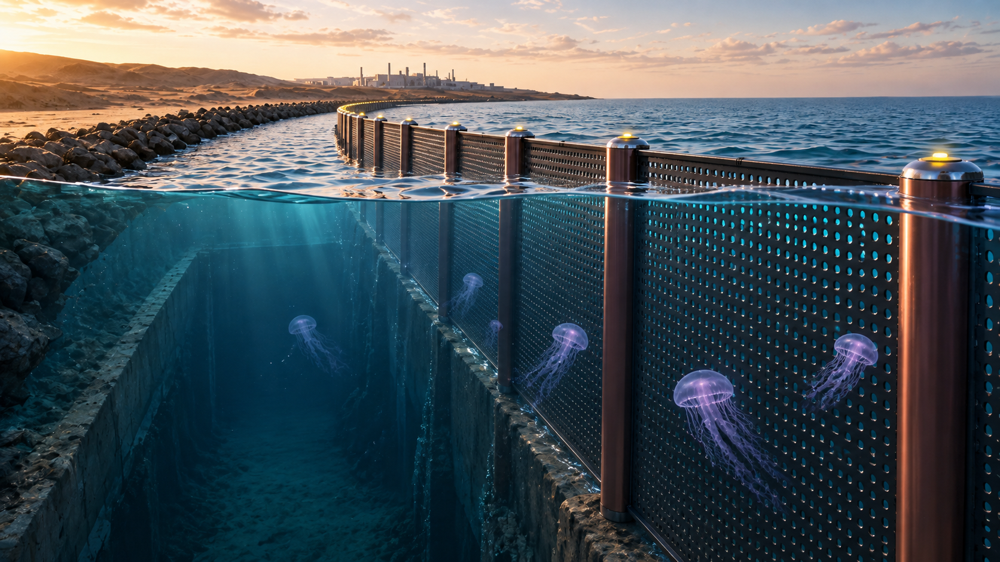

Belt advances
Through-flow continues through the perforations while the belt circulates around the two vertical drums.

Modular traveling-belt sections span the defined inlet and exclude incoming adult jellyfish.
The AUV patrols hard walls, breakwater surfaces and forebay areas independently of the barrier.
The concept sits marine-side after early warning; existing intake protection remains in place.
The black perforated belt travels around two vertical drums. At the drive side it passes a fixed scraper, so each patch of belt is cleaned on every circuit. The 3D viewer keeps that mechanism visible instead of flattening it into a generic screen.

Through-flow continues through the perforations while the belt circulates around the two vertical drums.
Any attached residue is carried to the drive pillar instead of remaining on one fixed surface.
A fixed plate contacts the moving belt and mechanically clears it on each pass.
The close-up is one section; identical sections are ganged to cover the inlet width and remain serviceable individually.
The robot is not the barrier. It operates deeper in the sheltered waterway where hard surfaces can host colonies. The model is built around the deck hardware: forward vision and lighting, sonar, station-keeping thrusters, an articulated removal arm, and a collection path.


The required 1–2 minute prototype video is bundled directly with this site and plays from the same GitHub Pages deployment.
Measure mesh through-flow and self-cleaning behavior; test vision, tool force and suction capture on representative surfaces.
Run a scaled inlet plus wall mission and compare before/after surface coverage, collection success and intervention time.
Demonstrate the barrier and AUV in one intake-like geometry while keeping the two systems operationally independent.
Dimensions, aperture, hydraulic loading, pressure rating and final materials are not site-approved design data. They remain engineering inputs for a later detailed design.
Visibility may degrade in turbidity, so the concept pairs optical inspection with sonar and supervised autonomy rather than assuming vision alone.